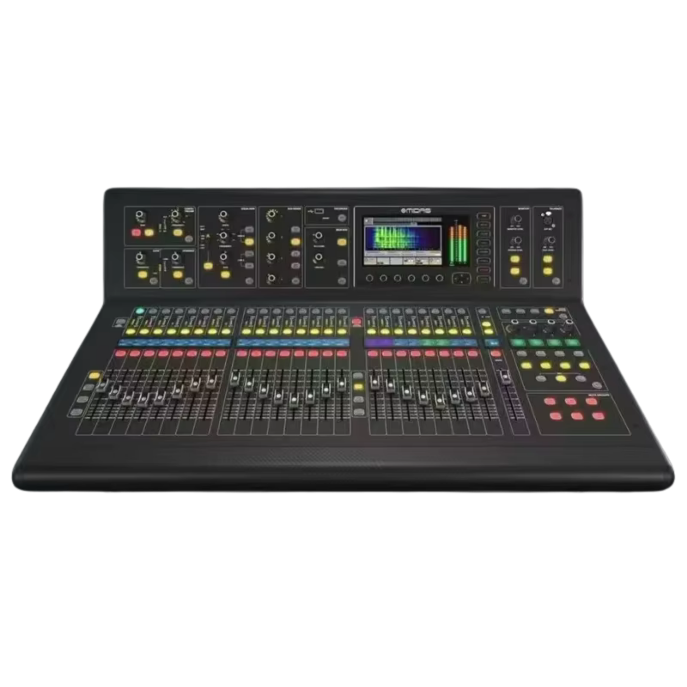
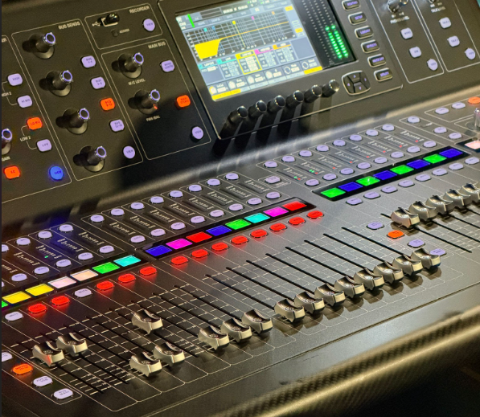
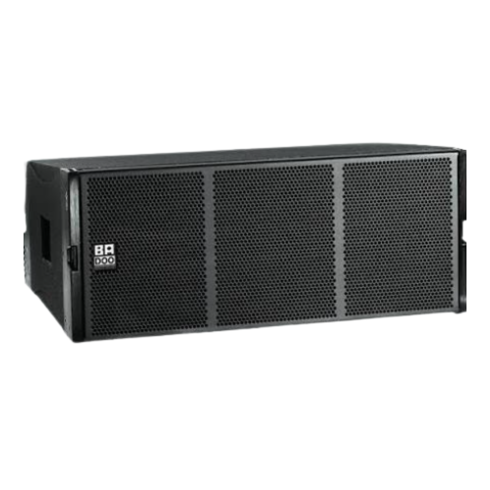
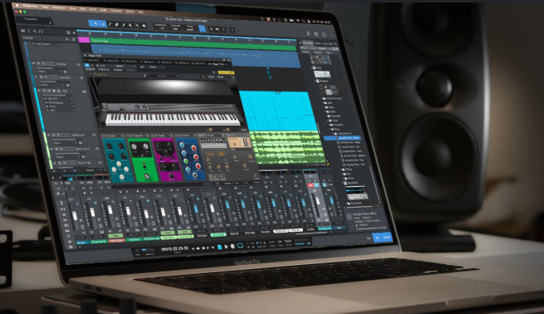

Ringkasan
"M32 adalah konsol mixing digital profesional yang memadukan warisan analog Midas dengan teknologi digital mutakhir."
Ini memadukan kualitas warisan analog Midas dengan teknologi pemrosesan digital modern. Dirancang untuk aplikasi live sound dan studio rekaman, M32 mewarisi teknologi preamp dari seri Midas PRO yang legendaris. Desain fisiknya dirancang oleh desainer otomotif mewah Rajesh Kutty (Bentley Motors) menghasilkan sasis berbahan serat karbon dan aluminium yang tidak hanya elegan, tetapi juga tangguh untuk kebutuhan tur.
Salah satu keunggulan utama Midas M32 terletak pada teknologi microphone preamplifier-nya dengan karakter suara jernih, detail, dan headroom luas. Pengguna dapat mengatur kontrol EQ, routing, dan kompresor secara langsung dari permukaan kontrol fisik secara real-time.

Kontrol & Fader
Antarmuka presisi dengan durabilitas kelas dunia.
Fader Motorized Midas PRO 25 fader bermotor 100mm diuji hingga 1 juta siklus penggunaan—3x lebih awet dibandingkan standar industri.
Scribble Strips Layar LCD mini di setiap saluran untuk penamaan instrumen, warna, dan ikon tanpa selotip kertas.
Layar Utama TFT 7 inci resolusi tinggi daylight viewable yang tetap nyaman di luar ruangan.
Rotary Encoders Akses EQ dan dinamika secara instan tanpa perlu repot menatap menu layar.

Responsivitas
Performa tanpa jeda untuk alur kerja instan.
DSP 40-Bit Floating-Point Memberikan rentang dinamis masif tanpa distorsi beban internal.
Latensi Ultra Rendah Hanya 0,8 milidetik (input-ke-output), sangat nyaman untuk in-ear monitoring para musisi.
Sends on Fader Mengubah fungsi fader utama menjadi fader pengirim ke monitor musisi secara instan dengan satu sentuhan.

Integrasi DAW
Jembatan mulus antara performa live dan dapur rekaman.
Audio Interface 32x32 Perekaman multitrack live langsung ke laptop via ekspansi USB 2.0.
Protokol Kontrol Lengkap Mendukung Mackie Control dan HUI untuk mengontrol Pro Tools, Logic Pro X, Cubase, maupun Studio One.
Stem Mixing Routing grup track kembali dari software untuk diolah melalui mesin efek kelas dunia Midas.
Spesifikasi
M32 menawarkan 40 saluran input simultan dengan 32 preamp mikrofon Midas PRO, 25 bus pengelompokan output, dan pemrosesan internal berkualitas 192 kHz. Dilengkapi 8 FX Virtual engine kelas atas serta port ganda AES50 untuk ekspansi kabel LAN hingga 96 input panggung.
Kesimpulan
Midas M32 memadukan komponen fisik kelas atas (serat karbon dan sasis aluminium) dengan sistem audio tanpa kompromi. Merupakan investasi terbaik untuk rental sound system, rumah ibadah, panggung tur musik, hingga studio rekaman profesional.